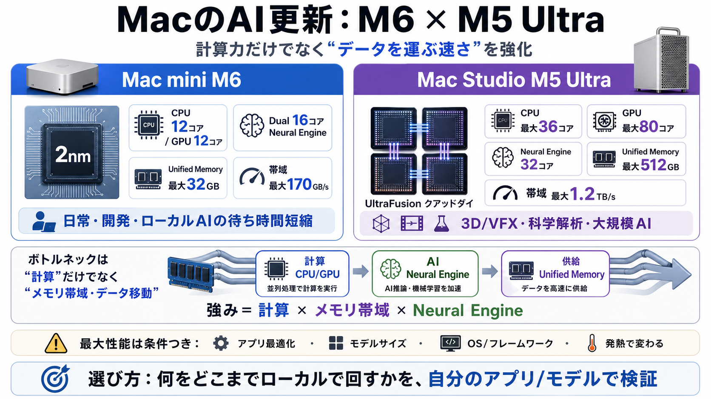

Apple introduces M6 and M5 Ultra for a big leap in ...
170GB/s of unified memory bandwidth.1 M5 Ultra, the ultimate powerhouse for pro and AI workloads, uses next-generation U…

Mac miniのM6と、Mac StudioのM5 Ultraを発表。計算力とAI処理（AI compute）を強化し、ローカルでの大きい作業を速くする狙いです。
AIや動画編集は「計算」だけでなく「データを運ぶ速さ」が効きます。そこでAppleは、メモリ帯域とニューラルエンジンも同時に引き上げる方向性を打ち出しています。
M6はApple初の2nmチップで、CPUは12コア構成、GPUも12コアに拡張。さらにDual 16コアNeural Engineで、オンデバイスAIの実行を速める設計です。
M6の統一メモリ帯域は最大170GB/s。データ供給が速いほど、AI推論や編集のような“データ量が多い作業”で有利になりやすい、という考え方です。
コア数を増やしても、データの移動が遅ければ伸びません。そこでAppleは、Neural Engineの強化だけでなく“帯域”を設計の中心に置いています。
M5 UltraはUltraFusionによるクアッドダイ構成をM-series SoCで初採用。複数ダイを単一プロセッサのように扱い、デスクトップ級の“計算＋供給”を狙います。
M5 UltraはCPU最大36コア、GPU最大80コア。さらに統一メモリ帯域は最大1.2TB/sとされ、M3 Ultra比の大幅改善が示唆されています。
M5 Ultraは32コアNeural EngineでオンデバイスAIを強化。統一メモリ最大512GBで、巨大データをローカルに置いたまま大規模LLMを動かす前提を厚くしています。
AppleはCore AI / Core ML / Metal / Xcodeの連携を通じて、CPU・GPU・Neural Engineを横断して最適化する方向性を示しています。ユーザーが細かく“調整”しなくても性能が出やすい設計です。
一般にM6は日常・学生・開発者・AIホビイストにもバランス良く、M5 Ultraはプロ用途や大規模AIワークロード向け。製品レイヤで役割分担が説明されています。
リリースの主張は内部テストや選定ベンチマークに基づく表現が中心で、実ユーザー体験はアプリ実装・モデルサイズ/量子化・OS/フレームワーク・電力/発熱にも左右されます。最大性能をそのまま自分の用途に直結させないのが安全です。
M6は2nmとDual Neural EngineでローカルAIを加速し、M5 UltraはUltraFusionクアッドダイと最大帯域で“移動”を強化。計算資源とデータ供給をセットで上げる発表で、デバイス上でAIを回す現実味が増しています。
170GB/s of unified memory bandwidth.1 M5 Ultra, the ultimate powerhouse for pro and AI workloads, uses next-generation U…
The M5 Ultra is Apple's first chip using its UltraFusion technology to form a quad-die architecture (The M5 Max chips it…
Apple proudly claims that the M5 Ultra is Apple's most powerful chip ever, and the first to use a “quad-die” architectur…
Apple claims that this design results in record-setting single-threaded performance and up to 1.2x speed improvements ov…
With the M6’s 12-core CPU complex, which adds two more cores than the M5, the M6 chip can offer nearly a 30 percent incr…